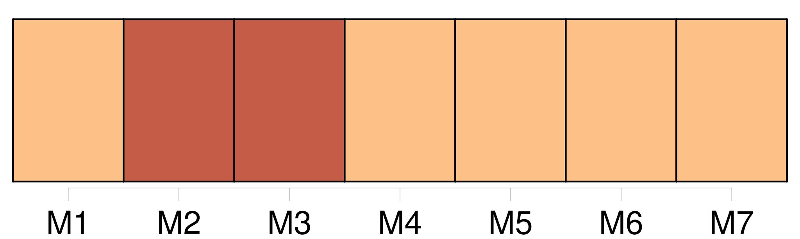
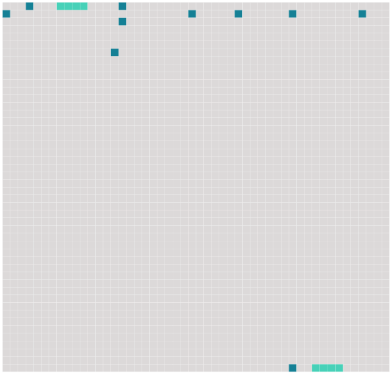

Longueur nb maillons : 12 mentions |
 |
Voici comment : [1 phrases] Bien que porte à porte, [nous] nous défendions de le saluer, ce dont il enrageait si fort, qu'un jour, n'y tenant plus, il [nous] aborda sur la route et [nous] dit : « Eh bien!! [on] ne salue pas un conseiller municipal?? » [Nous] nous sauvâmes. [1 phrases] Mais que pouvait contre [nous] un conseiller municipal?? [7 phrases] J'eusse voulu pouvoir rester là toujours, mais notre bonne, envoyée par ma mère, vint [nous] rappeler au travail. [102 phrases] La belle saison venue, mon père aimait à [nous] emmener, [mes frères et moi] , dans de longues promenades. |
 |
Il est possible de télécharger la ressource sur la page Ortolang |
Si vous avez des questions ou vous voyez des erreurs, merci d'envoyer un mail à silvia.federzoni89@gmail.com |